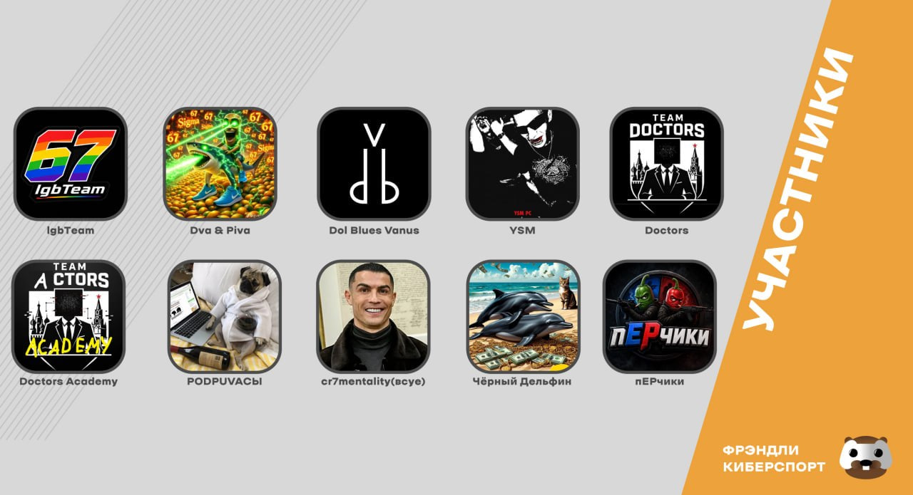
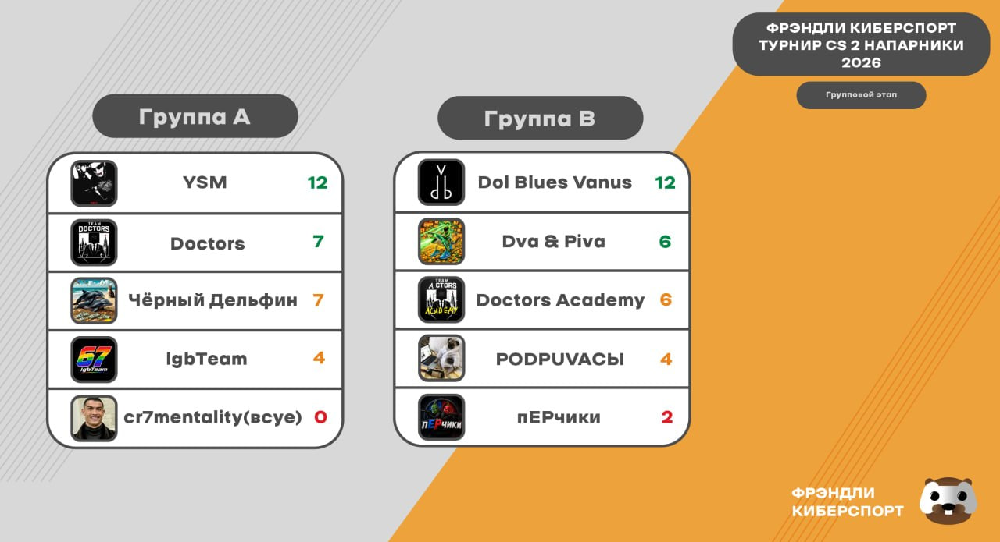
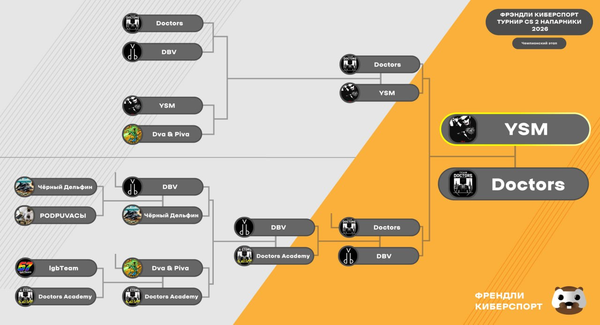

The Wingman Friendly Cybersport 2026 Cup, the community's 2v2 CS2 tournament run on CyberShoke, wrapped up on July 6 after six days of group-stage and playoff matches between ten teams. Doctors entered two rosters. The main lineup reached the grand final, deliberately forfeited its way out of the upper bracket to set up a grudge match against Dol Blues Vanus, won that grudge match, and then lost the final itself 3-2 to YSM after leading 2-0. Doctors Academy, playing most of the event with its own coach filling the second seat, went out in the lower-bracket semi-final to finish fourth.
Ten teams signed up, split into two groups of five. Group A: YSM (klafex, J0NI), Doctors (D1amp0, Dew1erMode), Чёрный Дельфин, IgbTeam (Casio, -lokyy-) and cr7mentality(всуе). Group B: Dol Blues Vanus (SlaRezzz, Eryt), Dva & Piva, Doctors Academy (dark_sasi and coach Mikhail 'adski_profi' Bortsov, with Xteps also filling the second seat at times), PODPUVACЫ and пЕРчики (Vascka, G0G).

Across their recorded matches in the Cup, both Doctors rosters' rating swings tell most of the story on their own — starting with the main roster.
D1amp0 was Doctors' steadiest player all tournament, closing at a 1.08 average and never posting a truly bad map until the final stretch of the grand final. Dew1erMode actually opened the Cup better than anyone — a 1.99 rating in the group-stage win over IgbTeam — but a rockier back half of the event dragged him down to 1.04 overall, right around Cup average, with his worst games arriving exactly when it mattered least to be cold: the grand final's final three maps.
On the Academy side, dark_sasi was comfortably the best player in either Doctors uniform this Cup, averaging 1.33 including an 18/3 wrecking job on пЕРчики. Xteps, drafted in specifically for the brutal run-in against Dol Blues Vanus, held his own at 1.02. Coach Mikhail 'adski_profi' Bortsov played every map of Academy's tournament and paid for it in his own numbers — a 0.71 average — the cost of fielding a second team at all rather than forfeiting the slot entirely.
Group A was a formality at the top and a fight for everything else. YSM swept all four of their round robin matches 2-0 — over cr7mentality(всуе), Чёрный Дельфин, IgbTeam and Doctors — to finish on 12 points, untouched. Doctors recovered from that loss to YSM to beat both Чёрный Дельфин and IgbTeam 2-1 and picked up a forfeit win over cr7mentality(всуе), finishing on 7 points, level with Чёрный Дельфин but ahead on the head-to-head. IgbTeam closed the group on 4, and cr7mentality(всуе) forfeited every remaining match after their opening loss to finish on 0.
Group B belonged to Dol Blues Vanus, who also went a clean 4-0 for 12 points, beating пЕРчики, PODPUVACЫ, Doctors Academy and Dva & Piva along the way. Doctors Academy opened with a straight-maps loss to DBV, then dropped a deciding third map to Dva & Piva before closing the group with 2-0 and 2-1 wins over пЕРчики and PODPUVACЫ respectively — enough for 6 points, level with Dva & Piva but edged out for the second seed on tiebreakers. PODPUVACЫ finished on 4, пЕРчики on 2.

The top two seeds from each group opened the double-elimination bracket in the upper half: Doctors against Group B's top seed Dol Blues Vanus, and YSM against Dva & Piva. Doctors swept DBV 2-0 to open their playoff run, while YSM did the same to Dva & Piva, setting up an all-Group-A upper-bracket final between Doctors and YSM.
Meanwhile the lower bracket was already grinding through the group stage's 3rd and 4th seeds. Чёрный Дельфин beat PODPUVACЫ 2-0 and Doctors Academy beat IgbTeam 2-0 to survive the first round, before the two teams dropping down from the upper bracket's opening round joined in: Dva & Piva forfeited their next match to Doctors Academy, and DBV — freshly upset by Doctors — knocked out Чёрный Дельфин 2-0. That set up a lower-bracket semi-final between Doctors Academy and DBV, and DBV won it 2-1, eliminating Doctors Academy in fourth place.
Before any of that lower-bracket business resolved, Doctors had a decision to make in their own upper-bracket final against YSM. Rather than play it out, Doctors took a deliberate 0-2 technical loss — a walkover straight into the lower bracket. The logic: a real shot at beating YSM twice in the same event was a stretch, but dropping down guaranteed a shot at Dol Blues Vanus, the team that had just eliminated Doctors Academy. Revenge, not seeding, was the priority.
"Beating YSM twice in one final wasn't realistic the way that bracket worked, so instead of burning energy on a match we'd probably lose anyway, we took the walkover and saved our legs for DBV. They'd just knocked our academy guys out, and that one meant more to us than the seeding did. I'd make that call again — the 2-1 over DBV was worth it, even knowing how the final itself ended."
The gambit worked. Dropped into the lower bracket by their own choice, Doctors met Dol Blues Vanus in the lower-bracket final and won 2-1, eliminating them in third place and avenging Doctors Academy's exit in the same breath. That earned Doctors a second shot at YSM — this time for real, in a best-of-five grand final.

Doctors took Mirage 9-5 and Inferno 9-4 to open the decider 2-0, before YSM won the last three maps straight — Nuke 9-5, Vertigo 9-7 and Overpass 9-4 — to complete the reverse sweep and win the Cup 3-2. It was the same story as the group-stage script in miniature: Doctors' main pair started fast and faded, while YSM's klafex and J0NI settled in as the series went on.
"We had this final in our hands at 2-0 and it slipped straight through our fingers — that's going to sting for a while. Second place isn't what we came for, but between that and the DBV win, I'll take the tournament we had."
Doctors Academy's run ended a round short of the final four's business end, but getting a makeshift roster to a lower-bracket semi-final at all was no small thing.
"Playing and coaching at the same time for a whole tournament isn't something I'd want to make a habit of — my own numbers show it. But somebody had to hold the second seat down, and I'm proud of what dark_sasi and Xteps did with it. Losing to DBV twice stung, but we got one map off them, and then the main roster finished the job for us in the lower-bracket final. Fourth place with a roster we assembled the week signups opened is nothing to be ashamed of."
Friendly Cybersport thanked all ten participating teams and everyone who tuned into the broadcasts from the Cup's matches on CyberShoke, with more tournaments already promised for the community down the line.
- 1st — YSM
- 2nd — Doctors
- 3rd — Dol Blues Vanus
- 4th — Doctors Academy
Doctors — Cup roster
- D1amp0
- Dew1erMode (captain)
Doctors Academy — Cup roster
- dark_sasi
- Mikhail 'adski_profi' Bortsov (Coach, playing)
- Xteps (stand-in)
Full map-by-map stats from the Cup are available on the Doctors Matches tab under Wingman Friendly Cybersport 2026 Cup.
← Back to homepage